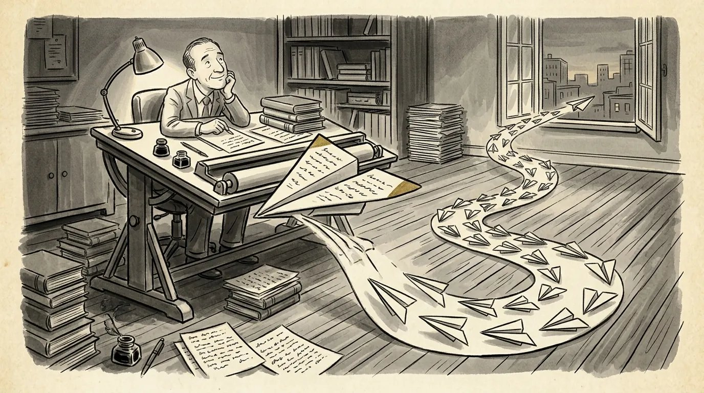

How to write a TV pilot that makes a reader want episode 2
A pilot has to tell one good episode and prove the show can run for years. Here's how to do both, from format and page counts to the mistakes I see most.

What a TV pilot has to do
A TV pilot has to do two jobs at once: tell one satisfying episode of story, and prove the show can keep going for years. That second job is what separates learning how to write a TV pilot from learning how to write a feature. A movie ends. A pilot has to promise that it won't.
When a pilot works, a reader finishes it knowing five things:
- The world: where we are, how it works and why it's worth spending time in
- The characters: who we're following, what they want and why they can't get it
- The engine: the situation that will generate stories week after week
- The tone: what kind of show this is, from the first page on
- The voice: why you, specifically, are the writer of this show
The engine is the one writers most often miss. A great premise with no engine is a movie. A courtroom, a hospital, a family business, a con that has to be maintained: these generate story because conflict keeps arriving on its own.
The "episode 2" question
The test of a pilot is whether a reader can picture episode 2, and episode 22. If the pilot uses up its central conflict, the reader has nowhere to go.
Ask yourself what your characters are doing next week. If the answer is "the same thing, but harder," that's a good sign. If the answer is "I'm not sure, since the big secret came out in the pilot," you may have written a short film or the first act of a feature.
A useful exercise: write ten one-line episode ideas before you write the pilot. If they come easily, you have an engine. If you're stuck at four, the series premise needs work, and it's much cheaper to find that out now.
Premise pilot vs. non-premise pilot
A premise pilot shows how the series situation begins; a non-premise pilot drops us into the show already running, as a typical episode. Both are legitimate, and the choice depends on your story.
- Premise pilot: We meet the characters before the change that creates the series. A teacher is diagnosed and starts cooking meth. Someone arrives in a new town, takes a new job, inherits a new problem. The advantage is a built-in arc. The risk is that the pilot spends so long on origin that it never shows what a regular episode looks like.
- Non-premise pilot: The situation is already in place, and the pilot plays like episode five. Procedurals and workplace shows often work this way. The advantage is that the reader sees the engine in action. The risk is a pilot that feels like it has no beginning.
The Wikipedia entry on television pilots traces the distinction back to early network TV, when some shows shot a "proof of concept" episode set further into the run so buyers could see the typical week. The logic hasn't changed: whichever kind you write, a reader should finish it understanding what the show will be every week.
Half-hour vs. hour: formats and page counts
Most half-hour single-camera pilots run about 25 to 35 pages, multi-camera sitcoms run longer because of double-spaced formatting, and hour-long drama pilots usually land between about 50 and 63 pages. These are norms, not laws, and they vary by outlet.
- Half-hour single-camera comedy: Shot like a film, formatted like a screenplay. Final Draft suggests newer writers aim short, around 22 to 25 pages for a 30-minute slot, though produced pilots often run longer.
- Multi-camera sitcom: Shot on a stage in front of an audience, with double-spaced dialogue and its own formatting conventions. That's why these scripts often hit 45 to 50 pages for the same runtime, as Paste notes.
- Hour-long drama: Final Draft puts the usual range at 45 to 63 pages, with 50 to 55 a common target. One page still equals about one minute.
For a spec pilot, err on the shorter side. A 70-page hour pilot from an unknown writer reads as a writer who couldn't cut.
Act structure, teasers and cold opens
Network pilots are built around commercial breaks, with a teaser or cold open followed by a set number of acts; streaming and premium cable have loosened those rules.
On ad-supported TV, a one-hour drama typically opens with a short teaser, then runs four to six acts, each ending on a turn strong enough to bring the audience back after the break. Final Draft's own breakdown of the Breaking Bad pilot shows a three-page teaser and four acts. Half-hour comedies typically use a cold open and two or three acts, sometimes with a short tag at the end.
The cold open matters more than its length suggests. In two or three pages, it sets the tone and gives the reader a reason to turn the page. For a comedy, it should be funny. For a drama, it should pose a question.
Streaming changed the math. With no commercial breaks, many streaming scripts don't mark act breaks at all, and episode lengths vary. Even so, I'd still build the act turns in. A reader should feel the story shift every 10 to 15 pages, labeled or not. Act breaks were invented for advertisers, but they survived because they're good for audiences too.
A pilot isn't the first chapter of your show. It's the argument for why your show should exist.
The pilot bible and pitch doc
A series bible, or a shorter pitch document, explains where the show goes after the pilot: the world, the characters, the season arc and sample episodes. You don't need one to get your pilot read, but you need to be able to answer every question it would answer.
A practical pitch doc for a writer without a deal is usually short, often under 15 pages. It typically covers:
- A logline and a one-paragraph series overview
- Why this show, why now and why you
- Character breakdowns for the main cast, with their series-long arcs
- A season one arc, and a sense of where seasons two and three might go
- Several short episode ideas that show the engine at work
- Tone and comparable shows
Final Draft has a solid walkthrough on developing a TV show bible. Writing one before the pilot also tells you whether the "episode 2" question has an answer. And when someone asks you to pitch the series, the bible is your preparation.
Common pilot mistakes
Most pilots that don't work fail in one of a handful of predictable ways, and almost all of them are fixable before a reader sees them.
- Too much setup. Twenty pages of backstory before anything happens. Start as late as you can and trust the audience to catch up.
- Too many characters. Introducing an ensemble of twelve in the first ten pages leaves a reader with none. Anchor the pilot in one or two characters we follow closely.
- Exposition in dialogue. Characters telling each other things they both already know so the audience can hear it.
- No engine. A strong episode with no clear sense of what happens next week.
- Saving the good stuff. Holding the best twist for episode six. Nobody gets to episode six if the pilot doesn't land.
- Tone drift. A dark comedy that goes broad in act two, or a thriller that stops for a sitcom scene. The pilot sets the rules, so keep them.
Many of these are structural, and the same tools apply as in features. My post on three-act structure examples covers how to diagnose where a story sags.
How to write a pilot script that works as a writing sample
Most original pilots are never produced, but a strong one is the writing sample that gets TV writers represented and staffed. That's the realistic goal, and it shapes how you write.
When showrunners and executives read samples for staffing, they're looking for voice, point of view and the ability to write a complete, polished episode. A mentor on the WGA's Written By site makes the point that original material is what shows a reader who you are as a writer, and that a spec pilot is a strong form of it. She also calls selling the pilot itself a long shot. Write it to show what you can do, and treat a sale as a bonus.
That means:
- Polish matters more than premise. A staffing sample is judged on execution. A familiar premise in a distinctive voice can beat a dazzling idea written flat.
- Have more than one. Reps and showrunners often ask for a second sample. Two pilots in different tones, or a pilot and a feature, make you easier to send out.
- Make the first ten pages count. Executives decide early whether to keep reading. The opening has to establish tone and voice immediately.
Before you send it out, get an honest outside read. You know what the show is in your head. A reader only knows what's on the page, and the gap between the two is where most pilots lose people. When the notes come back, my guide on how to take script notes can help you sort the useful ones from the noise.
Frequently asked questions
How many pages should a TV pilot be?
As a rough guide, a half-hour single-camera pilot runs about 25 to 35 pages, a multi-camera sitcom about 45 to 50 because of double-spaced formatting, and an hour-long drama about 50 to 63. For a spec pilot, err on the shorter side.
Should my pilot have act breaks if it's meant for streaming?
You don't have to label them, since many streaming scripts don't. But the story should still turn every 10 to 15 pages, because readers feel the shape whether it's labeled or not.
Do I need a series bible to send out my pilot?
Usually not to get it read, but you should be able to answer what a bible answers: where the season goes, how the characters change and what episodes look like. Many writers keep a short pitch document ready for when someone asks.
Should I write a premise pilot or a non-premise pilot?
Write a premise pilot if the change that starts the series is the most dramatic part of the story. Write a non-premise pilot if the show's strength is its weekly engine, as with many procedurals and workplace shows.
Do you give notes on TV pilots?
Yes. TV pilot notes are $400. I read the whole script myself, then we talk it through on a live call of up to two hours.